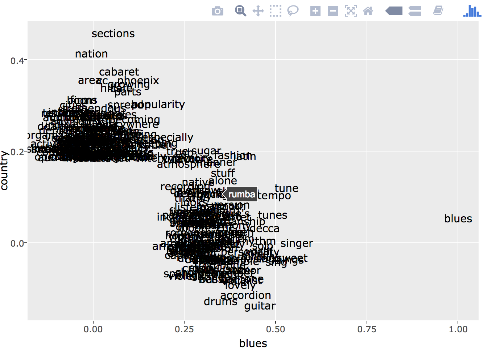

The following essays reflect the assignments completed for Clio II in Spring 2017.
They reflect various ways that RStudio can be a useful method to explore historical questions.
They also reflect Jessica Dauterive's burgeoning quest to become an effective digital historian.
To learn more about Jessica, click here.
To see some of her first attempts at using R, read on.
This essay uses R functions to explore the New Nations Votes dataset. The strategies used to complete this project demonstrate the way that exploratory data analysis (EDA) can be a good strategy for learning more about a dataset that you might be unfamiliar with, or finding new connections in a dataset you are familiar with. The thumbnail to the right reveals a graph, made with ggplot2, of New Jersey’s gubernatorial elections between 1795-1815. Through EDA, these broad trends were revealed, and allowed for a closer look into moments of historical interest.
Click on the thumbnail to view the project.
Beginning in the 1980s, the United States Census Bureau introduced the American Community Survey (ACS) to collect various demographic information in between census years. In 2000, the results of the ACS survey caused a stir in Southwest Louisiana, reporting that the number of reported Cajuns in the ACS estimates had dropped by 400,000 since the previous report. This essay seeks to explore Cajun identity in the ACS since this fallout, mapping the five-year data from the years 2006-2010 using R and leaflet. It will begin with a note on methodology (of the census and how this essay uses census data), and then interrogate the argument by Louisiana scholars like Jacques Henry that the census itself might be responsible for the “disappearance” of Cajuns in the twenty-first century.
**This essay is large, so the thumbnail link directs you to the github repository. In order to view this project, you can download and open the .html file. The data used and the .rmd file that contains the R code is also available in this repository if you would like to view the project this way instead.
This essay will problematize the distinctions between genres in Billboard Magazine by taking a large sample of issues (1930s-2010s), and using the wordVectors package to find similarities between particular words. Here, I plan to explore the ways that “folk” musics are talked about by searching for the words that have come to reference traditional music traditions–“country” and “blues.” I then visualize these word vectors in interactive graphs using the ggplot2 and plotly packages. This text analysis reflects the complicated history around recording American folk music that not only defies the color line, but also suggests a larger sphere of musical influence than what is typically understood as “traditional” roots music.
Click on the thumbnail to view the project.
Text Analysis Essay
